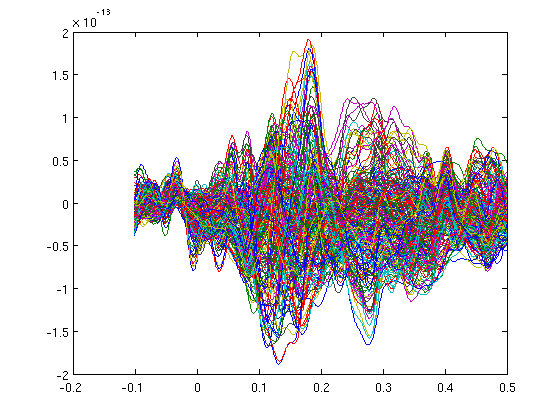
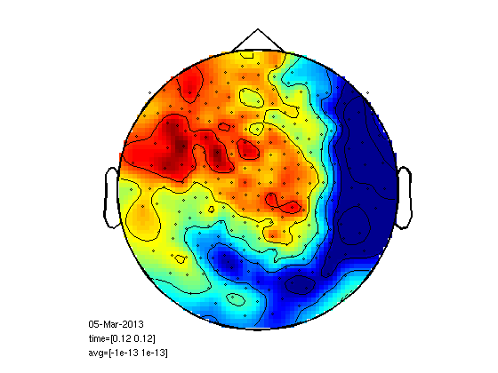
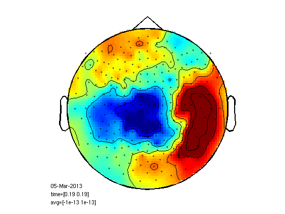
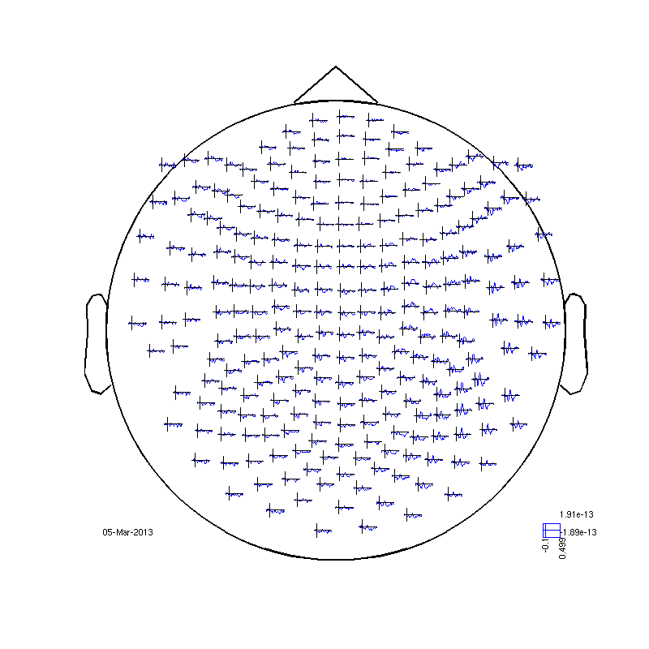
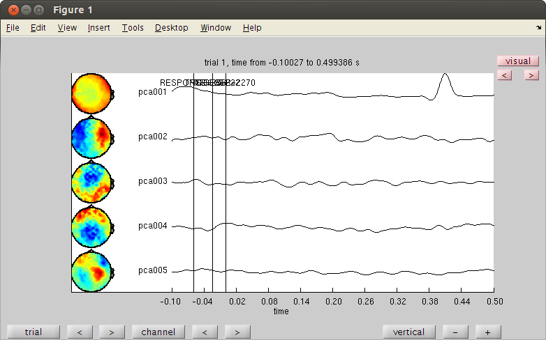
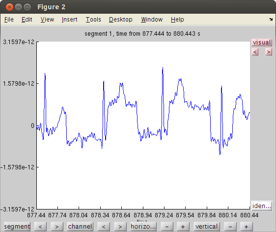
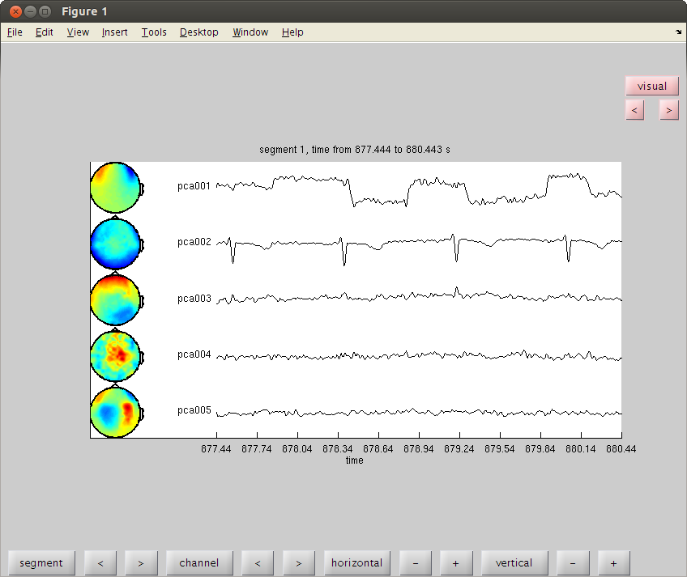
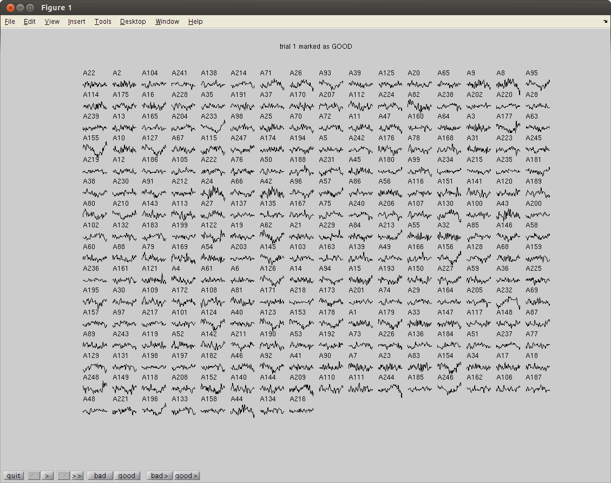
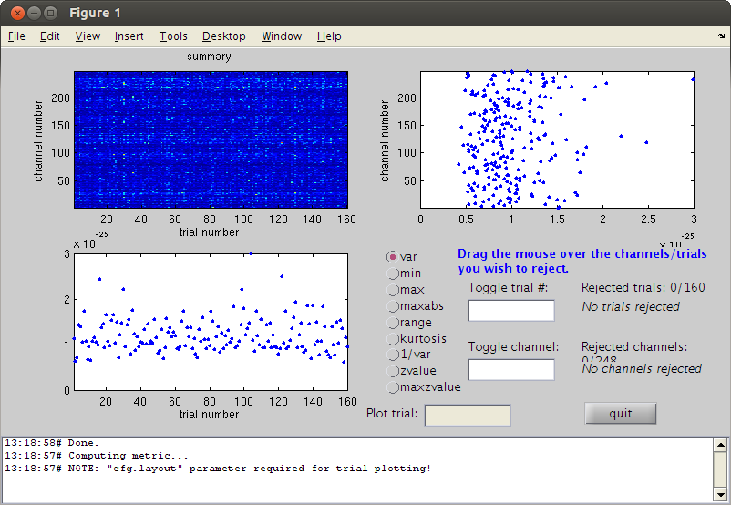
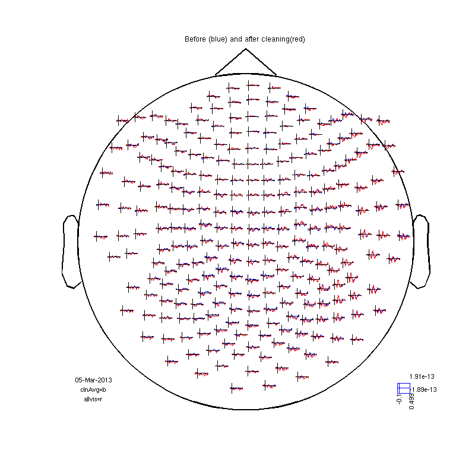

Component analysis
Another cleaning method which is good for HB and also for blinks is ICA. pca may also work for large artifacts such as HB. first let's read the visual data.
Contents
Looking at the data without cleaning (just filter)
cd somsens fileName='c,rfhp0.1Hz'; % we read an uncleaned file so we can see HB as a component. cfg=[]; cfg.dataset=fileName; cfg.trialdef.eventtype='TRIGGER'; cfg.trialdef.prestim=0.1; cfg.trialdef.poststim=0.5; cfg.trialdef.offset=-0.1; cfg.trialdef.visualtrig= 'visafter'; cfg.trialfun='BIUtrialfun'; cfg.trialdef.eventvalue= [222 230 240 250]; %left index finger cfg1=ft_definetrial(cfg); cfg1.demean='yes'; cfg1.baselinewindow=[-0.1,0]; cfg1.bpfilter='yes'; cfg1.bpfreq=[1 40]; cfg1.channel='MEG'; cfg1.feedback='no'; dataorig=ft_preprocessing(cfg1); % averaging cfg=[]; cfg.feedback='no'; allvis=ft_timelockanalysis(cfg,dataorig); plot(allvis.time,allvis.avg); cfgp=[]; cfgp.layout='4D248.lay'; cfgp.interactive='yes'; cfgp.zlim=[-10^-13 10^-13]; cfgp.xlim=[0.12 0.12]; figure; ft_topoplotER(cfgp,allvis); figure; cfgp.xlim=[0.19 0.19]; ft_topoplotER(cfgp,allvis); cfgp=rmfield(cfgp,'xlim'); fig1=figure; set(fig1,'Position',[0,0,800,800]); ft_multiplotER(cfgp,allvis);
evaluating trialfunction 'BIUtrialfun'
reading header...
applying digital weights in the gradiometer balancing matrix
undoing the Supine balancing
reading events from file...
applying digital weights in the gradiometer balancing matrix
undoing the Supine balancing
found 894 events
created 160 trials
the call to "ft_definetrial" took 3 seconds and an estimated 0 MB
applying digital weights in the gradiometer balancing matrix
undoing the Supine balancing
processing channel { 'A22' 'A2' 'A104' 'A241' 'A138' 'A214' 'A71' 'A26' ...
the call to "ft_preprocessing" took 7 seconds and an estimated 0 MB
the input is raw data with 248 channels and 160 trials
the call to "ft_timelockanalysis" took 0 seconds and an estimated 0 MB
reading layout from file 4D248.lay
the call to "ft_prepare_layout" took 0 seconds and an estimated 0 MB
Warning: Some points fall outside the outline, please consider using another layout
the call to "ft_topoplotTFR" took 0 seconds and an estimated 0 MB
the call to "ft_topoplotER" took 0 seconds and an estimated 0 MB
reading layout from file 4D248.lay
the call to "ft_prepare_layout" took 0 seconds and an estimated 0 MB
the call to "ft_topoplotTFR" took 0 seconds and an estimated 0 MB
the call to "ft_topoplotER" took 0 seconds and an estimated 0 MB
selection avg along dimension 1
selection dof along dimension 1
selection var along dimension 1
reading layout from file 4D248.lay
the call to "ft_prepare_layout" took 0 seconds and an estimated 0 MB
the call to "ft_multiplotER" took 1 seconds and an estimated 0 MB
    Component analysis
ICA takes a lot of time. pca is faster, but!
cfgc = []; cfgc.method='pca'; cfgc.numcomponent=20; comp = ft_componentanalysis(cfgc, dataorig); %see the components and find the artifact cfgb=[]; cfgb.layout='4D248.lay'; cfgb.channel = {comp.label{1:5}}; cfgbo=ft_databrowser(cfgb,comp); % see the ica components. % look for heartbeat. it repeats almost every trial. remember it's number. % there are two ways to reject a component. reconstracting the data from % the good parts and reducing the bad component from the original data. % here is the first way of doing it. cfgrc = []; cfgrc.component = 1; % change cfgrc.feedback='no'; dataca = ft_rejectcomponent(cfgrc, comp); % here is the second % dataca = ft_rejectcomponent(cfgrc, comp, dataorig); % the second way is usefull when you only create some 10 or 20 components rather than 248 % with cfgc.numcomponent=20; % because you cannot reconstruct the data well with 20 components. % it is also usefull when you calculate the components with one piece of % data (where you have lots of blinks) in order to clean another piece of % data.
the input is raw data with 248 channels and 160 trials selecting 248 channels baseline correcting data scaling data with 1 over 0.000000 concatenating data................................................................................................................................................................ concatenated data matrix size 248x97760 starting decomposition using pca applying the mixing matrix to the sensor description the call to "ft_componentanalysis" took 1 seconds and an estimated 185 MB reading layout from file 4D248.lay the call to "ft_prepare_layout" took 1 seconds and an estimated 185 MB the input is component data with 20 components and 248 original channels detected 0 visual artifacts redrawing with viewmode component fetching data... done fetching artifacts... done preprocessing data... done the call to "ft_prepare_layout" took 0 seconds and an estimated 0 MB plotting artifacts... plotting events... plotting data... the call to "ft_prepare_layout" took 0 seconds and an estimated 0 MB plotting component topographies... done the call to "ft_databrowser" took 150 seconds and an estimated 185 MB removing 1 components keeping 19 components the call to "ft_rejectcomponent" took 1 seconds and an estimated 0 MB 
Component analysis on raw data
we have eye movement block in the end of the experiment
trig=readTrig_BIU('c,rfhp0.1Hz'); trig=clearTrig(trig); startt=find(trig==50,1)/1017.25; endt=find(trig==52,1)/1017.25; cfg=[]; cfg.dataset='c,rfhp0.1Hz'; cfg.trialdef.beginning=startt; cfg.trialdef.end=endt; cfg.trialfun='trialfun_raw'; % the other usefull trialfun we have are trialfun_beg and trialfun_BIU cfg1=ft_definetrial(cfg); cfg1.demean='yes';% old version was: cfg1.blc='yes'; cfg1.baselinewindow=[-0.1,0]; cfg1.lpfilter='yes'; cfg1.lpfreq=40; cfg1.channel='MEG'; MOG=ft_preprocessing(cfg1); % lets view the raw data for one channel cfgb=[]; cfgb.layout='4D248.lay'; cfgb.continuous='yes'; cfgb.event.type=''; cfgb.event.sample=1; cfgb.blocksize=3; cfgb.channel='A248'; comppic=ft_databrowser(cfgb,MOG);
Warning: 50Hz cleaning with cleanMEG pack will not be possible using the new trigger
evaluating trialfunction 'trialfun_raw'
reading header...
Warning: READ_HEADER is only a compatibility wrapper, which will soon be removed. Please instead
call FT_READ_HEADER.
applying digital weights in the gradiometer balancing matrix
undoing the Supine balancing
found 1 events
created 1 trials
the call to "ft_definetrial" took 1 seconds and an estimated 0 MB
applying digital weights in the gradiometer balancing matrix
undoing the Supine balancing
processing channel { 'A22' 'A2' 'A104' 'A241' 'A138' 'A214' 'A71' 'A26' 'A93' 'A39' 'A125' 'A20' 'A65' 'A9' 'A8' 'A95' 'A114' 'A175' 'A16' 'A228' 'A35' 'A191' 'A37' 'A170' 'A207' 'A112' 'A224' 'A82' 'A238' 'A202' 'A220' 'A28' 'A239' 'A13' 'A165' 'A204' 'A233' 'A98' 'A25' 'A70' 'A72' 'A11' 'A47' 'A160' 'A64' 'A3' 'A177' 'A63' 'A155' 'A10' 'A127' 'A67' 'A115' 'A247' 'A174' 'A194' 'A5' 'A242' 'A176' 'A78' 'A168' 'A31' 'A223' 'A245' 'A219' 'A12' 'A186' 'A105' 'A222' 'A76' 'A50' 'A188' 'A231' 'A45' 'A180' 'A99' 'A234' 'A215' 'A235' 'A181' 'A38' 'A230' 'A91' 'A212' 'A24' 'A66' 'A42' 'A96' 'A57' 'A86' 'A56' 'A116' 'A151' 'A141' 'A120' 'A189' 'A80' 'A210' 'A143' 'A113' 'A27' 'A137' 'A135' 'A167' 'A75' 'A240' 'A206' 'A107' 'A130' 'A100' 'A43' 'A200' 'A102' 'A132' 'A183' 'A199' 'A122' 'A19' 'A62' 'A21' 'A229' 'A84' 'A213' 'A55' 'A32' 'A85' 'A146' 'A58' 'A60' 'A88' 'A79' 'A169' 'A54' 'A203' 'A145' 'A103' 'A163' 'A139' 'A49' 'A166' 'A156' 'A128' 'A68' 'A159' 'A236' 'A161' 'A121' 'A4' 'A61' 'A6' 'A126' 'A14' 'A94' 'A15' 'A193' 'A150' 'A227' 'A59' 'A36' 'A225' 'A195' 'A30' 'A109' 'A172' 'A108' 'A81' 'A171' 'A218' 'A173' 'A201' 'A74' 'A29' 'A164' 'A205' 'A232' 'A69' 'A157' 'A97' 'A217' 'A101' 'A124' 'A40' 'A123' 'A153' 'A178' 'A1' 'A179' 'A33' 'A147' 'A117' 'A148' 'A87' 'A89' 'A243' 'A119' 'A52' 'A142' 'A211' 'A190' 'A53' 'A192' 'A73' 'A226' 'A136' 'A184' 'A51' 'A237' 'A77' 'A129' 'A131' 'A198' 'A197' 'A182' 'A46' 'A92' 'A41' 'A90' 'A7' 'A23' 'A83' 'A154' 'A34' 'A17' 'A18' 'A248' 'A149' 'A118' 'A208' 'A152' 'A140' 'A144' 'A209' 'A110' 'A111' 'A244' 'A185' 'A246' 'A162' 'A106' 'A187' 'A48' 'A221' 'A196' 'A133' 'A158' 'A44' 'A134' 'A216' }
reading and preprocessing
reading and preprocessing trial 1 from 1
the call to "ft_preprocessing" took 1 seconds and an estimated 0 MB
the input is raw data with 248 channels and 1 trials
detected 0 visual artifacts
redrawing with viewmode butterfly
fetching data... done
fetching artifacts... done
preprocessing data... done
plotting artifacts...
plotting events...
plotting data...
done
the call to "ft_databrowser" took 5 seconds and an estimated 0 MB
 PCA
cfgp=[]; cfgc.method='pca'; compMOG = ft_componentanalysis(cfgc, MOG); % see the components and find the HB and MOG artifact % remember the numbers of the bad components and close the data browser cfgb=[]; cfgb.layout='4D248.lay'; cfgb.channel = {comp.label{1:5}}; cfgb.continuous='yes'; cfgb.event.type=''; cfgb.event.sample=1; cfgb.blocksize=3; comppic=ft_databrowser(cfgb,compMOG); % set the bad comps as the value for cfgrc.component. cfgrc = []; cfgrc.component = [1 2]; % change cfgrc.feedback='no'; dataca = ft_rejectcomponent(cfgrc, compMOG,dataorig);
the input is raw data with 248 channels and 1 trials selecting 248 channels baseline correcting data scaling data with 1 over 0.000000 concatenating data. concatenated data matrix size 248x9050 starting decomposition using pca applying the mixing matrix to the sensor description the call to "ft_componentanalysis" took 0 seconds and an estimated 0 MB reading layout from file 4D248.lay the call to "ft_prepare_layout" took 1 seconds and an estimated 0 MB the input is component data with 20 components and 248 original channels detected 0 visual artifacts redrawing with viewmode component fetching data... done fetching artifacts... done preprocessing data... done the call to "ft_prepare_layout" took 0 seconds and an estimated 0 MB plotting artifacts... plotting events... plotting data... the call to "ft_prepare_layout" took 0 seconds and an estimated 0 MB plotting component topographies... done the call to "ft_databrowser" took 15 seconds and an estimated 0 MB baseline correcting data removing 2 components keeping 18 components the call to "ft_rejectcomponent" took 4 seconds and an estimated 0 MB
reject visual trial by trial
cfg=[]; cfg.method='trial'; %trial cfg.channel='MEG'; cfg.alim=1e-12; datacln=ft_rejectvisual(cfg, dataca);
the input is raw data with 248 channels and 160 trials showing the data per trial, all channels at once trial 1 marked as GOOD trial 1 marked as GOOD 160 trials marked as GOOD, 0 trials marked as BAD 248 channels marked as GOOD, 0 channels marked as BAD no trials were removed the call to "ft_rejectvisual" took 4 seconds and an estimated 0 MB
reject visual by variance
cfg=[]; cfg.method='summary'; %trial cfg.channel='MEG'; cfg.alim=1e-12; datacln=ft_rejectvisual(cfg, dataca); cfg=[]; cfg.feedback='no'; clnAvg=ft_timelockanalysis(cfg,datacln); cfgmp=[]; cfgmp.layout='4D248.lay'; cfgmp.interactive='yes'; fig2=figure; set(fig2,'Position',[0,0,800,800]); ft_multiplotER(cfgmp,clnAvg,allvis); title ('Before (blue) and after cleaning(red)')
the input is raw data with 248 channels and 160 trials showing a summary of the data for all channels and trials computing metric [--------------------------------------------------------\] 160 trials marked as GOOD, 0 trials marked as BAD 248 channels marked as GOOD, 0 channels marked as BAD no trials were removed the call to "ft_rejectvisual" took 3 seconds and an estimated 0 MB the input is raw data with 248 channels and 160 trials the call to "ft_timelockanalysis" took 0 seconds and an estimated 0 MB selection avg along dimension 1 selection dof along dimension 1 selection var along dimension 1 selection avg along dimension 1 selection dof along dimension 1 selection var along dimension 1 reading layout from file 4D248.lay the call to "ft_prepare_layout" took 0 seconds and an estimated 0 MB the call to "ft_multiplotER" took 1 seconds and an estimated 0 MB 